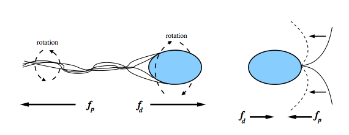
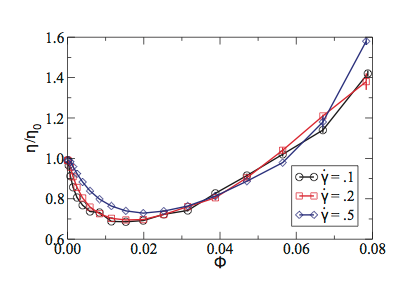
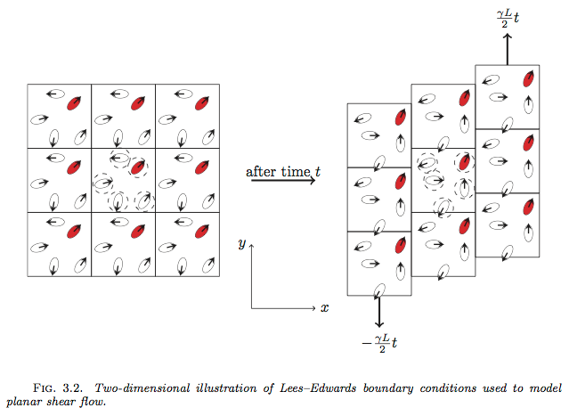
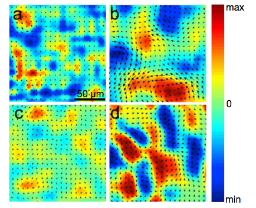
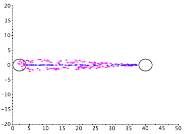
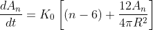
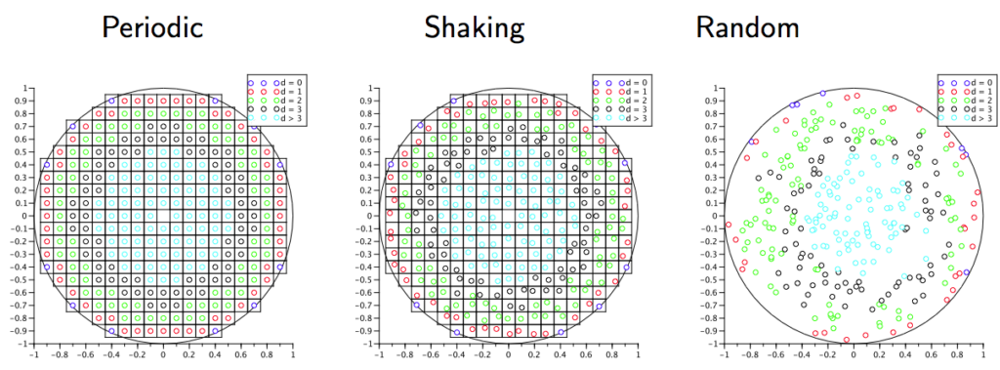
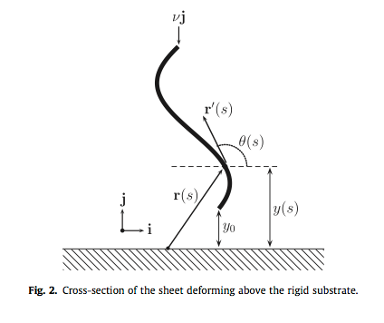
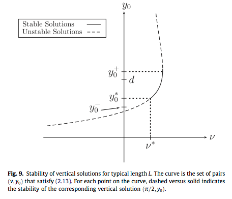

I develop differential-equation and agent-based models for biosystems and materials that predict the emergence of collective behavior, and the dramatic changes in effective properties it produces. Analysis and simulation do the rest.
Poultry food-safety modeling. Co-PI with D. Munther (PI) and C. Kothapalli.
Senior Personnel. Undergraduate research in the mathematical sciences.
Compute allocation (PI) for large-scale agent-based simulation.
Public Health Agency of Canada. Co-PI with D. Munther.
Agent-based models capture mechanism, but they don't produce a governing equation you can analyze. I'm building physics-informed and biology-informed neural networks that recover the continuum PDE hiding inside an ABM. The concrete goal is a repeatable pipeline: run the model, generate data, train the network, discover the equation, validate against the simulation. This is the foundation for the group's next papers and an NSF Applied Mathematics proposal on the ABM–BINN connection.
Effective viscosity. A suspension of swimming bacteria can have its viscosity dramatically reduced by long-range hydrodynamic interactions intrinsic to self-locomotion. A tractable model reproduces the reduction seen in Bacillus subtilis experiments, ties it to the onset of large-scale collective motion, and yields an explicit asymptotic formula. The reduction appears only at low concentration; push further and viscosity climbs again.
Global solvability. For a coupled PDE/ODE system of point-force dipoles under planar shear (imposed through Lees–Edwards quasi-periodic boundary conditions), I proved existence and uniqueness of solutions for all time, then used it to define the Liouville equation for the configuration density and the average bulk stress underlying the effective viscosity. Micro interactions determine macro properties.
Social insect behavior. Ant foraging and raiding modeled from first principles: different equations of motion for outbound foragers and returning ants, coupled to a reaction–diffusion PDE for pheromone. The model self-organizes into three lanes, two outbound and one central return lane, matching experiment. A continuum PDE for ant density is in progress.





Individual-carcass and spatial models track Campylobacter and E. coli through scalding and chilling, including the effect of water reuse on cross-contamination and pH-dependent thermal inactivation. This is the USDA-NIFA-funded thread, built alongside experimentalists and public-health partners, and it feeds directly into processing-line risk assessment.
Agent-based modeling of nuclear chromosome ensembles identifies determinants of homolog pairing during meiosis. Spatial models of synthetic microbial consortia explain heterogeneity in engineered systems. Clinical collaborations produced a validated model estimating postoperative urine output in children after cardiac surgery, and fluid–structure interaction models of renal tubules and primary cilia.
Foam coarsening on a sphere. An effective von Neumann relation on the sphere, extending the classic 2D law where a cell's area change depends only on its number of sides. On the sphere there are no stationary states, which changes the long-time behavior entirely.
Ginzburg–Landau superconductivity. Quantifying how randomness in columnar-defect locations reshapes the vortex distribution. As randomness grows the interface becomes more fractal and the critical field for hole vortices drops, rewriting the field–temperature phase diagram.
Graphene deformation. A coupled-ODE model for a graphene sheet suspended above a substrate by van der Waals forces, with buckling bifurcations analyzed by matched asymptotics. Two publications and a master's thesis.




New synthetic biology paper with chemistry alum Ryan Godin
Coverage of the spatial-consortia modeling work.
"Chatterboxes": a new model of how bacteria communicate
Collaboration featured by Florida State University.
Kaleidoscope selection, best aesthetic images
Foam-coarsening-on-a-sphere simulation, 2016.
Featured article, homepage
Hydrodynamic interactions in bacterial chemotaxis, 2019–2020.
Every paper, from the graphene work through the newest food-safety and foraging models.